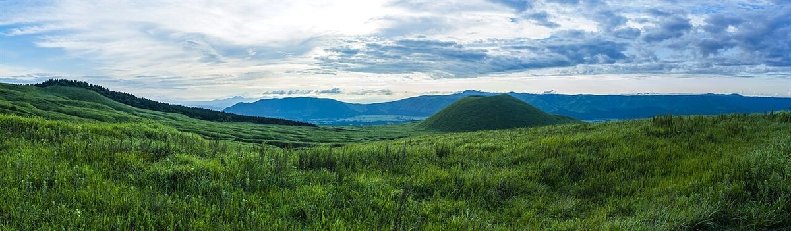
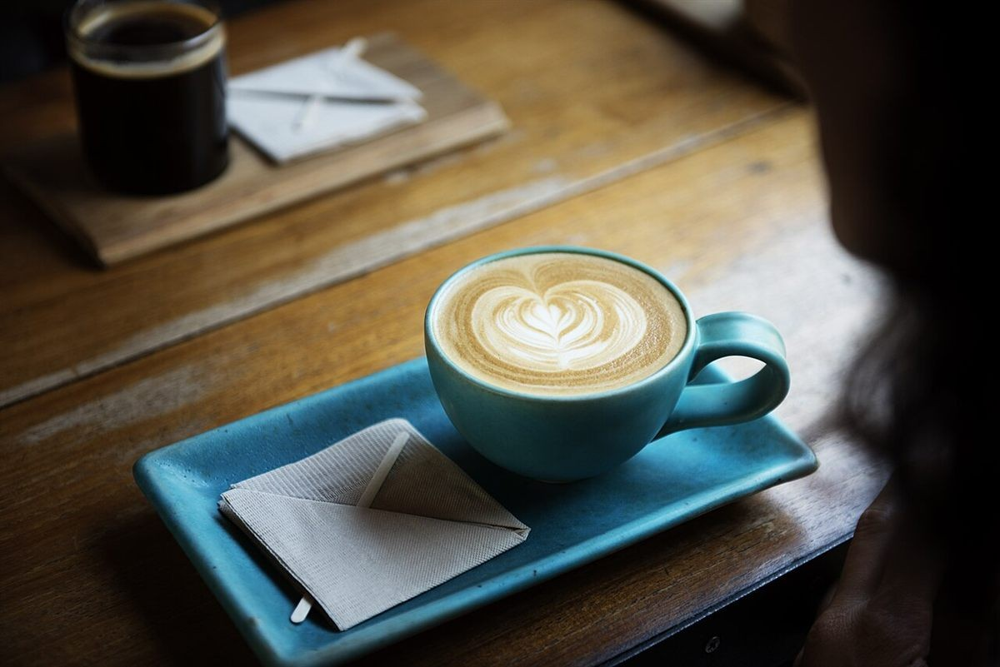
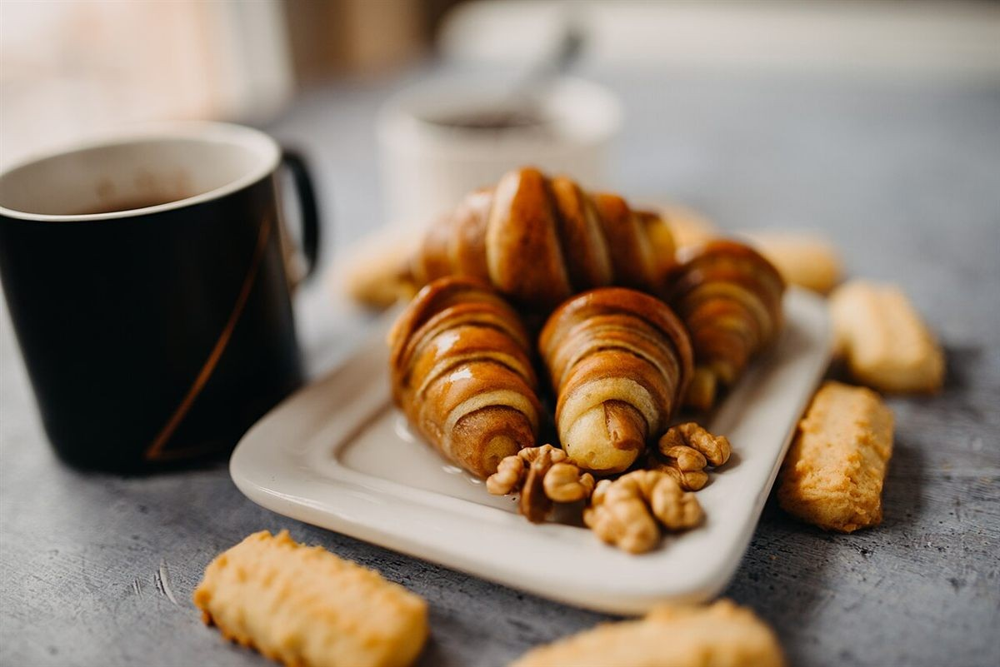
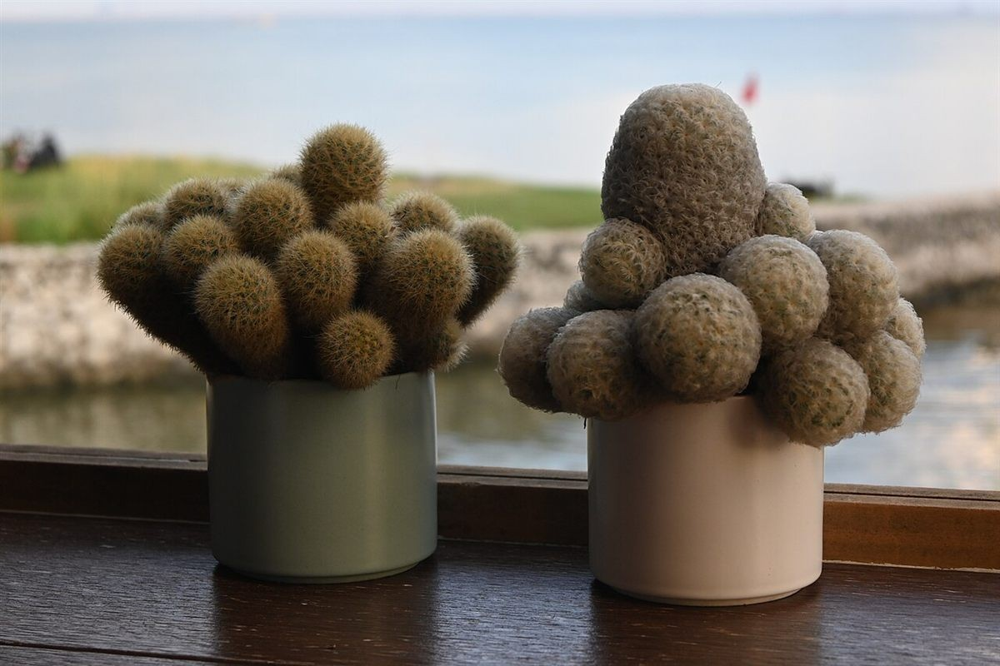
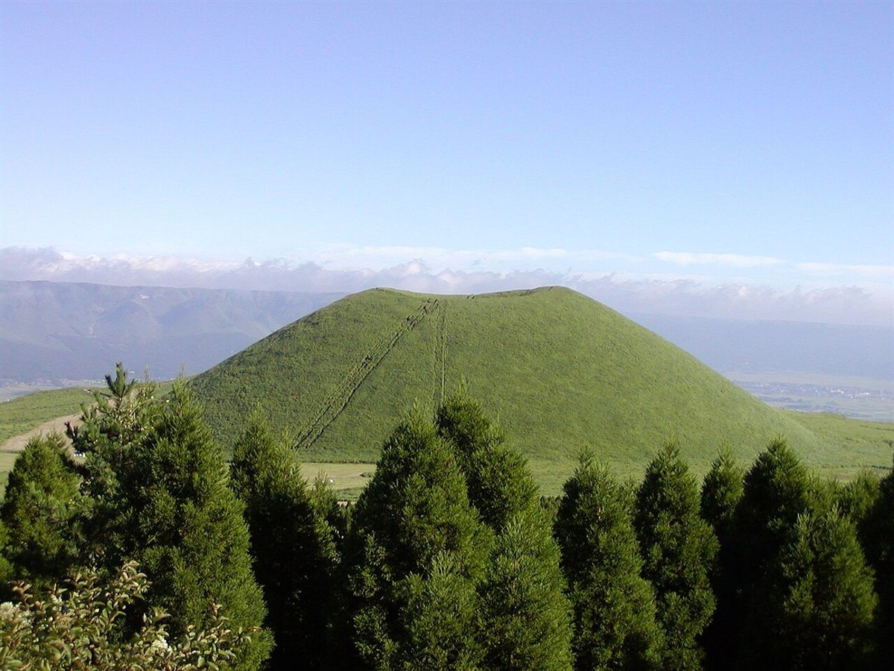

どんなお店かは準備中です。メニューや営業時間など、気になることはお電話かInstagramからお気軽にどうぞ。

お店の情報
- 所在地
- 熊本県菊池市北宮21-2
- 営業時間
- 準備中(お問い合わせください)
- 定休日
- 準備中(お問い合わせください)
- @koikoi.2024
「準備中」の項目は、お電話またはInstagramでご確認ください。
景色のイメージ
ここに並ぶ写真は、フリー素材のイメージです。北宮カフェ 恋鯉の実際の店内や提供内容を写したものではありません。


イメージ写真(店舗の実際ではありません)
制作側の案
空の色を映す、ひと息の場所
日々の合間に、少しだけ足を止める。窓の向こうの空を眺めるような、ゆっくりした時間をイメージして、このサンプルページを組み立てました。
これはページ制作側が考えたコンセプト案です。お店の理念や想いではなく、店舗にはまだ確認していません。
